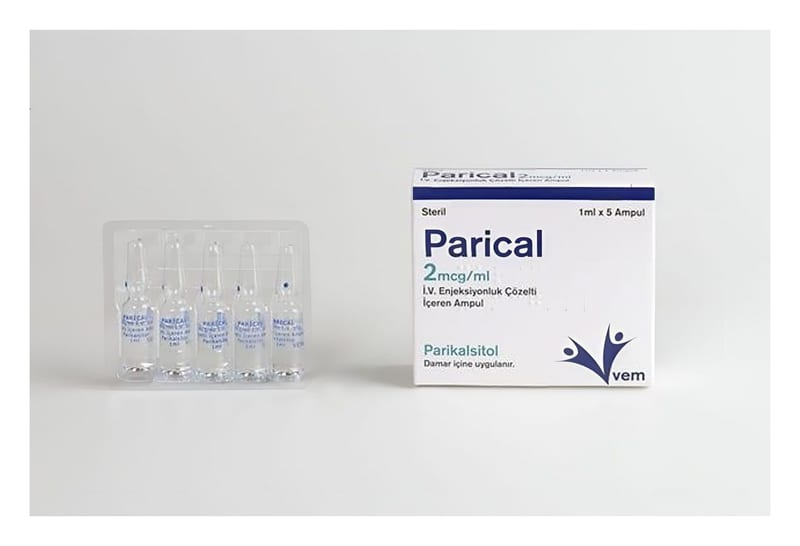

Parical 2 mcg/ml IV Enjeksiyonluk Çözelti İçeren Ampul, 5 Adet

Ne için kullanılır
KT · Bölüm 1• PARİCAL 2 mcg/ml 1 ml’lik ampullerde 5 ampullük kutular halinde kullanıma sunulmuştur. • Her 1 ml PARİCAL enjeksiyonluk çözelti 2 mikrogram parikalsitol içerir. • PARİCAL enjeksiyonluk çözelti; sulu, berrak ve renksiz bir çözeltidir. • PARİCAL enjeksiyonluk çözelti, aktif Vitamin D’nin sentetik bir formunu içerir ve vitamin D grubu ilaçlara aittir.
• Vitamin D, karaciğerde başlayan ve böbreklerde tamamlanan iki basamaklı süreç ile vücutta aktive olur. Aktif D vitamini, böbrekler ve kemikler de dâhil olmak üzere, vücuttaki birçok dokunun normal faaliyet göstermesi için gerekli bir maddedir. PARİCAL enjeksiyonluk çözelti, vücut yeterli miktarda üretemediğinde aktif D vitamini için bir kaynak sağlar. • PARİCAL enjeksiyonluk çözelti, hemodiyalize girilen kronik böbrek hastalığındaki düşük aktif D vitamini seviyeleri ile ilişkilendirilen kandaki yüksek paratiroid hormon seviyelerinin (sekonder hiperparatiroidizm) önlenmesi ve tedavisinde kullanılmaktadır.